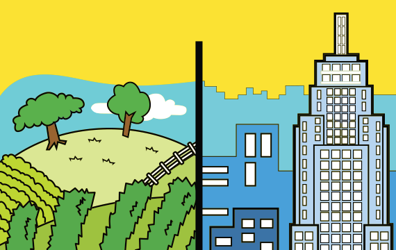

Diferença do campo e a cidade
A principal diferença entre o campo e a cidade reside na sua estrutura, atividades econômicas e estilo de vida. O campo, ou área rural, é caracterizado por atividades agrícolas e pecuárias, baixa densidade populacional e paisagens naturais. A cidade, ou área urbana, é marcada pela concentração de pessoas, edifícios, comércio, serviços e indústrias.
Campo (Área Rural):
Atividades:
Predominância de atividades agrícolas (plantação e colheita), pecuárias (criação de animais) e extrativismo.
Densidade Populacional:
Baixa, com menor concentração de pessoas por área.
Infraestrutura:
Menos desenvolvida em comparação com a cidade, com menor oferta de serviços e comércios.
Ambiente:
Mais natural, com paisagens abertas, ar mais puro e ritmo de vida mais tranquilo.
Cidade (Área Urbana):
Atividades: Concentração de indústrias, comércio, serviços (hospitais, escolas, bancos) e atividades administrativas.
Densidade Populacional: Alta, com grande concentração de pessoas por área.
Infraestrutura: Mais desenvolvida, com maior oferta de serviços, comércios e opções de lazer.
Ambiente: Mais artificial, com construções, trânsito intenso e poluição.
